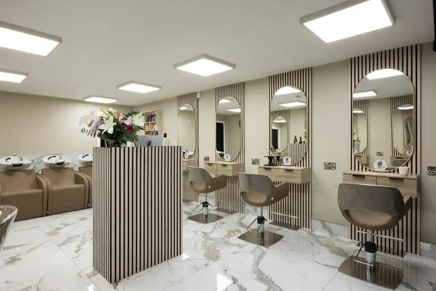
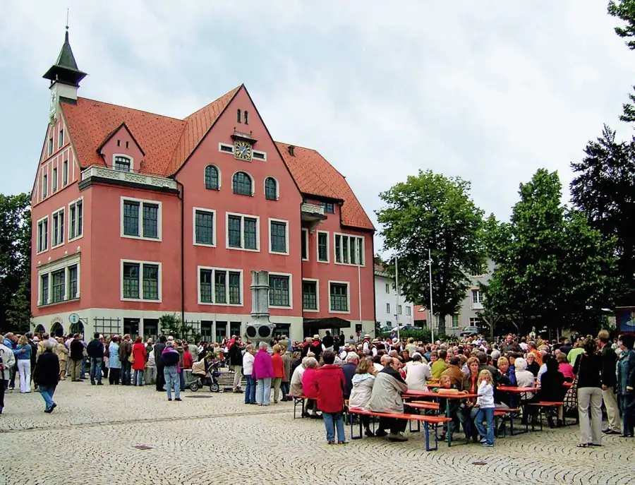

Friseur · Lindenberg im Allgäu · am Rathaus
Ihr Salon am Rathaus.
Das Friseur-Team Schuster in der Rathausstraße 2 – mit Beratung, sauberem Schnitt und einem Team, das Gäste immer wieder loben. Termine gibt es am einfachsten per Telefon.

Salon SchusterFriseur-Team · Rathausstraße 2 · Lindenberg
GeöffnetDi–Fr 8:30–13 & 14–18
Termin unter08381 1405
Di–Fr 8:30–13 · 14–18 Uhr, Sa 8–13 Uhr
Leistungen & Preise
Die Preisliste.
Hier steht künftig, was der Salon anbietet – mit echten Preisen. Belegt ist bisher nur, was Gäste in Bewertungen beschreiben; alles andere ist gelb markiert und wird vom Salon ergänzt.
Salon Schuster · Preise Stand ?
- 01Haarschnitt & BeratungGäste loben „Top Beratung, Top Schnitt“ und präzise, gründliche Arbeit.Preis
- 02HerrenhaarschnittIn Rezensionen erwähnt: „sauberer Herrenhaar-Schnitt“, mit Zeit und Gründlichkeit.Preis
- 03Neuer Look / TypberatungFür alle, die „mal Lust auf etwas Neues“ haben – so ein Gast.Preis
- 04Farbe & SträhnenLeistung & Beschreibung bestätigenPreis
- 05Waschen, Pflege & FöhnenLeistung & Beschreibung bestätigenPreis
- 06Festliche FrisurenHochsteck-/Brautfrisuren? bestätigenPreis
Preise nur nach Angabe des Salons – hier wird nichts geschätzt.
Öffnungszeiten
Das Terminbuch.
Dienstag bis Freitag mit Mittagspause, samstags vormittags. Montag und Sonntag ist geschlossen.
Di–Fr 8:30–13 und 14–18 Uhr · Sa 8–13 Uhr
Quelle: Branchenportal klussmann-friseure.de / Google-Eintrag, abgerufen 16.11.2026. Urlaub/Feiertage ergänzen
- MoMontaggeschlossen
- DiDienstag8:30–13 · 14–18
- MiMittwoch8:30–13 · 14–18
- DoDonnerstag8:30–13 · 14–18
- FrFreitag8:30–13 · 14–18
- SaSamstag8–13
- SoSonntaggeschlossen
Friseur-Team Schuster
Das Team vor dem Spiegel.
Wer hier schneidet, stellt sich bald selbst vor. Bis dahin sprechen die Gäste: Das Team wird in vielen Bewertungen ausdrücklich gelobt.
4,8/5
4,8 von 5 Sternen
208 Google-Bewertungen
Quelle: Google-Eintrag (über Exa-Places), Stand 16.11.2026. Vor Livegang aktualisieren
„Top Beratung, Top Schnitt, Stylischer Salon, Super Team. Danke“
„Cooles Ambiente, freundliche zuvorkommende Mitarbeiter, die wirklich vom Fach sind.“
„Habe eine tolle Beratung erhalten und der Haarschnitt ist grandios. Mein neuer Frisör. Das Team ist super“
Anfahrt
Direkt am Rathaus.
- Adresse
- Rathausstraße 2, 88161 Lindenberg im Allgäu
- Eingang
- Rollstuhlgerechter Eingang laut Branchenportal – bitte prüfen
- Parken
- Parkhinweis ergänzen

Stadtplatz-Foto: Vincent Berlin, Wikimedia Commons, CC BY-SA 4.0
Termin
Kurz anrufen, Platz nehmen.
Am schnellsten geht es per Telefon zu den Öffnungszeiten. Der Terminwunsch rechts zeigt, wie eine Anfrage über die Website aussehen könnte.
Anrufen08381 1405Online-Terminbuchung? gewünscht? Anbieter?